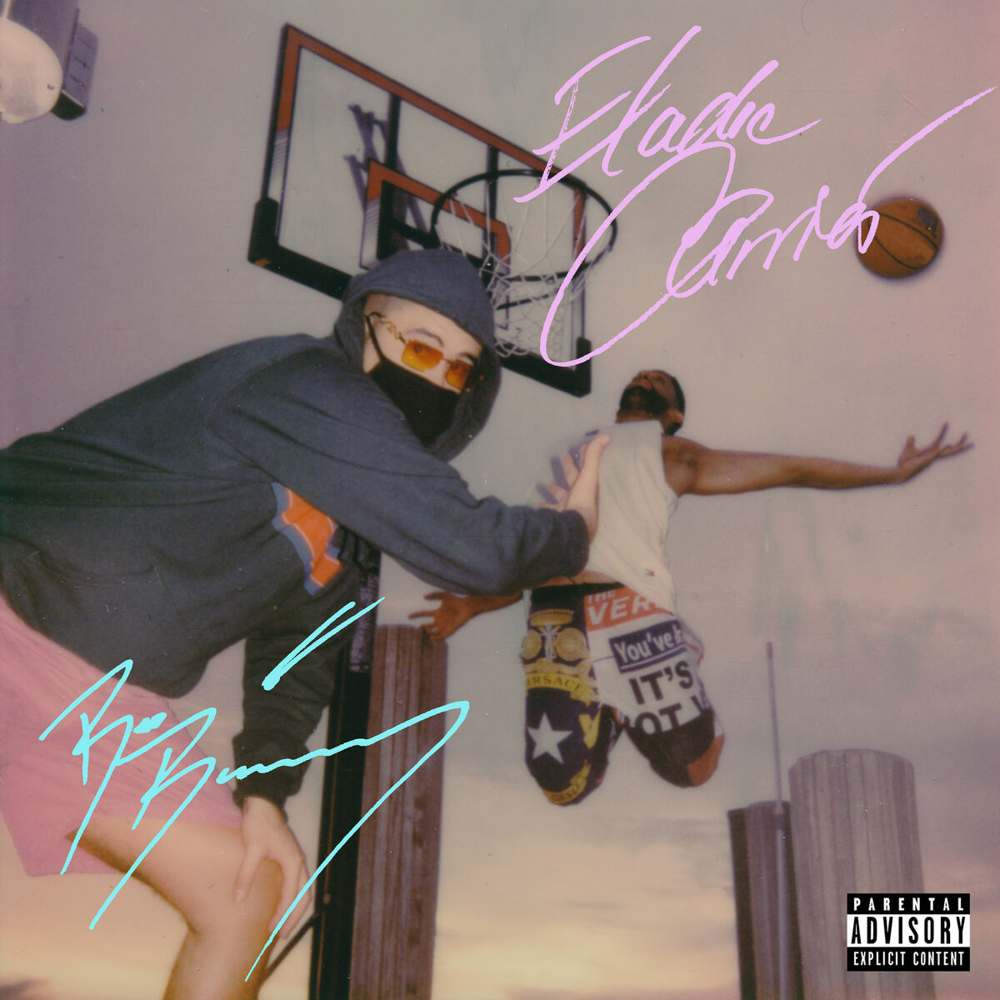

Su canción más escucha es Coco Chanel junto a Bad Bunny que juntos en esta colaboración rozan la cantidad de 500 millones de reproducciones en Spotify.
Otra de sus canciones más famosas es Kemba Walker que vuelve a repetir el feat de Bad Bunny con casi 400 millones de reproducciones en Spotify.
